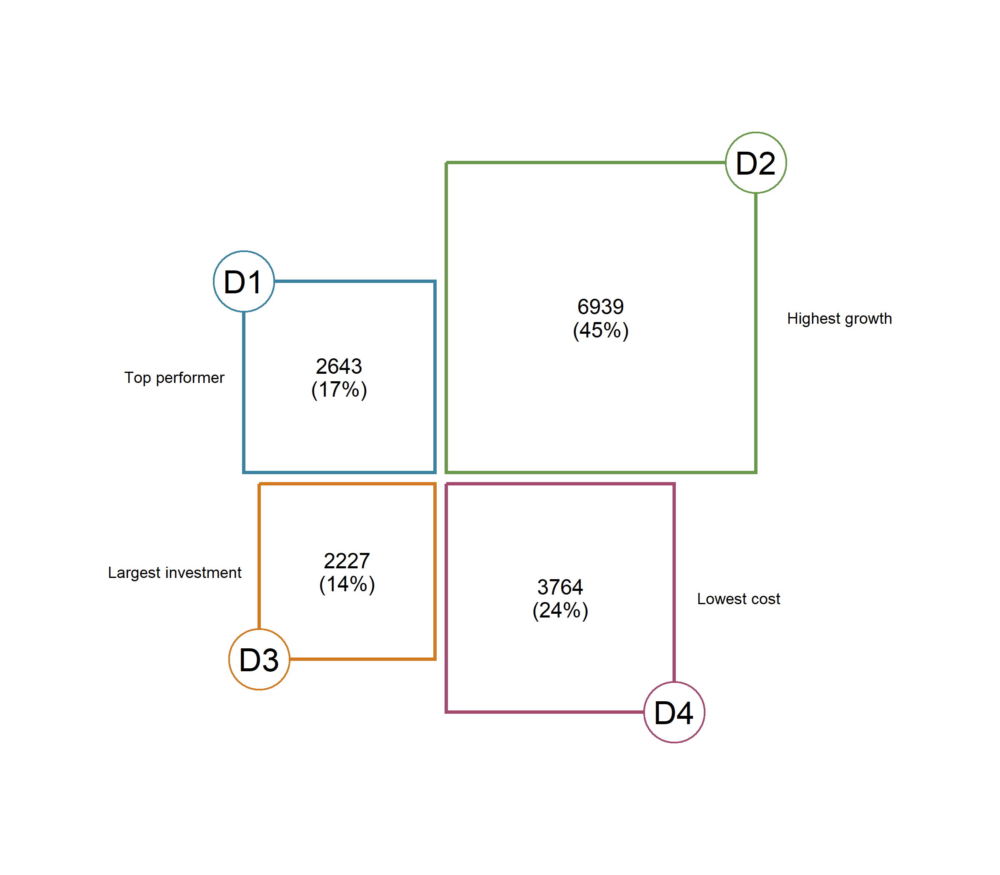
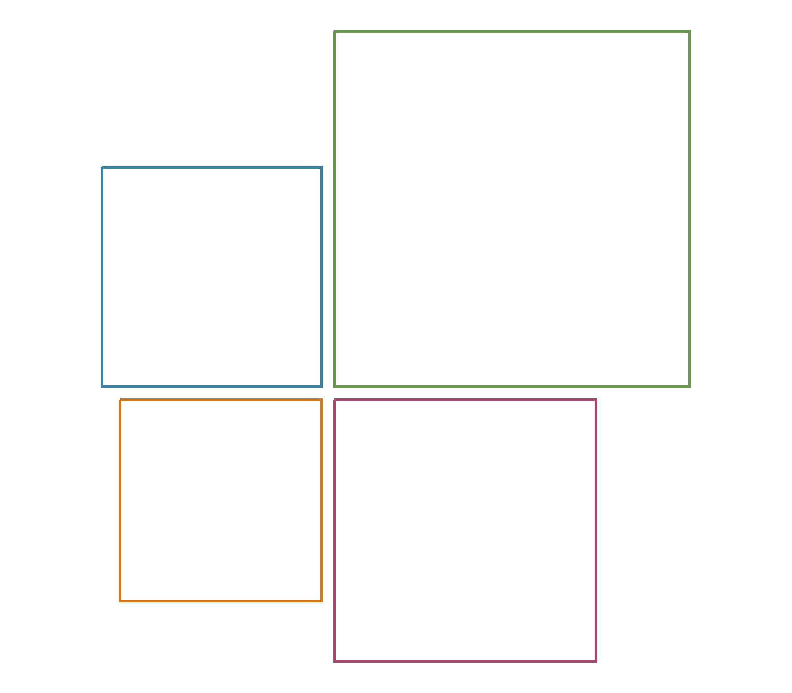
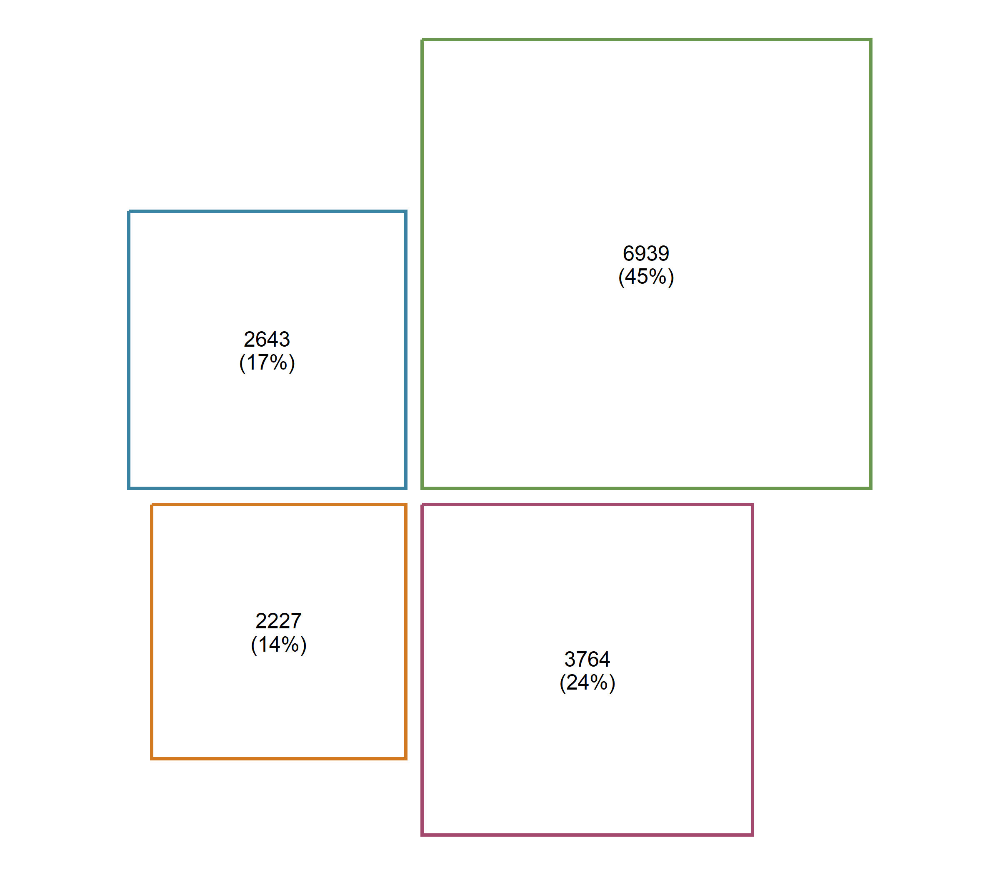
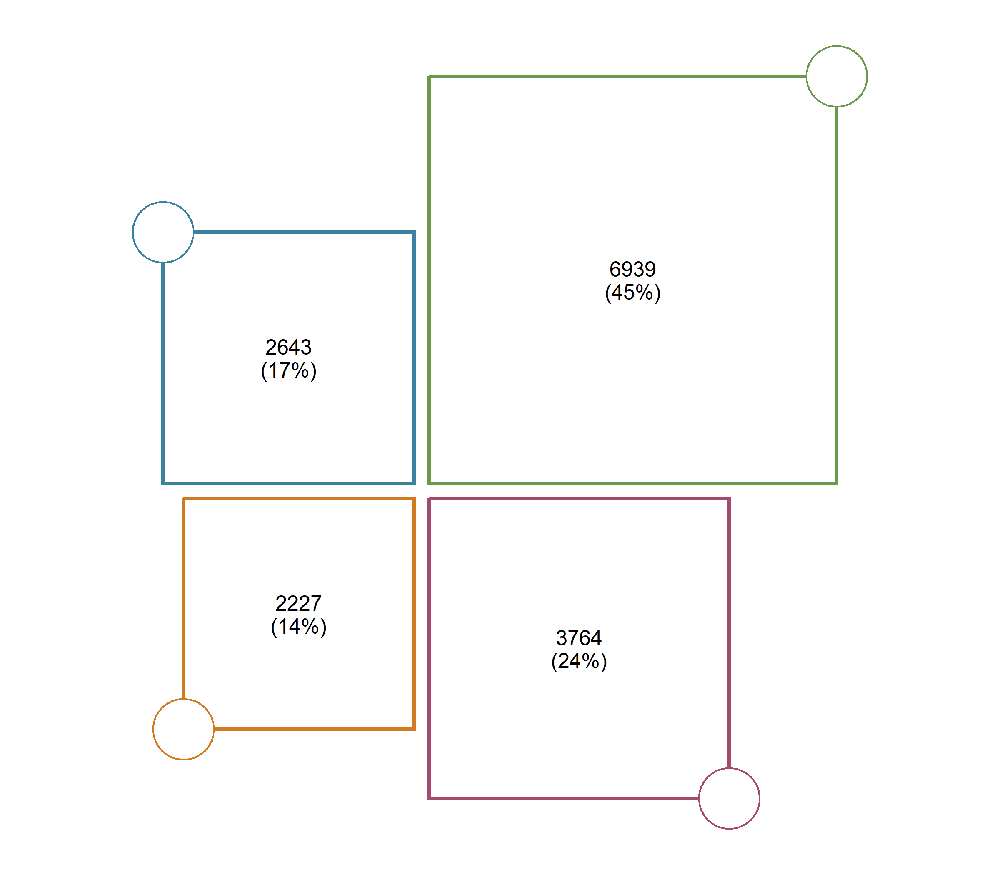
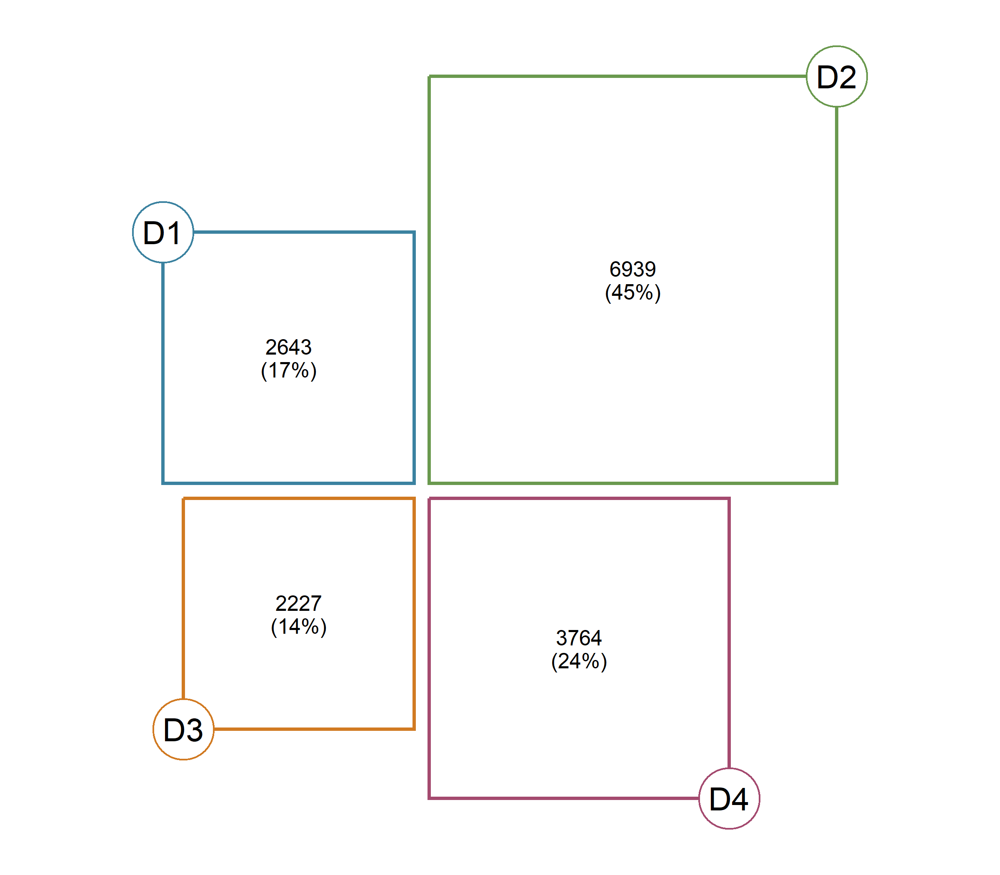

rectangler helps you build comparison graphics using rectangles in R.
It is designed for plots with a small number of meaningful objects: domains, groups, categories, steps, or indicators that should remain directly readable.

Why rectangler?
Rectangler is designed for comparison graphics where a small number of objects should remain visually distinct and directly readable.
Unlike treemaps, it keeps objects separate instead of packing them into a single area. Unlike bar charts, it combines rectangular layouts with labels, shapes and annotations to create compact comparison graphics.
Design principles
- constructor + layer grammar
- four built-in layouts
- publication-ready comparison graphics
- works naturally with ggplot2
Installation
You can install the development version from GitHub:
remotes::install_github("hriisalu/rectangler")The Rectangler grammar
Every Rectangler graphic starts with a constructor, which creates the layout. Additional information is then added using layers. This grammar is intentionally simple: start with a layout and enrich it layer by layer.
rect_plot4(data) %>%
rect_style() %>%
rect_label() %>%
rect_shape() %>%
rect_shape_label() %>%
rect_annotation()Your first plot
Let’s build a simple Rectangler graphic step by step. Create example data.
mydata <- tibble::tibble(
value = c(2643, 6939, 2227, 3764),
label = c("D1", "D2", "D3", "D4"),
border = c("#3B82A0", "#6A994E", "#D17A22", "#A44A6F"),
annotation = c(
"Top performer",
"Highest growth",
"Largest investment",
"Lowest cost"
)
) %>%
mutate(
share = round(value / sum(value) * 100),
text = paste0(value, "\n(", share, "%)")
)Start with a constructor.
rect_plot4(mydata, value_col = "value")Add styling.
rect_plot4(mydata, value_col = "value") %>%
rect_style(
fill = "white",
border_color = mydata$border,
border_width = 2
)
Add labels.
rect_plot4(mydata, value_col = "value") %>%
rect_style(
fill = "white",
border_color = mydata$border,
border_width = 2
) %>%
rect_label(
label_col = "text",
size = 0.8
)
Add corner shapes.
rect_plot4(mydata, value_col = "value") %>%
rect_style(
fill = "white",
border_color = mydata$border,
border_width = 2
) %>%
rect_label(
label_col = "text",
size = 0.8
) %>%
rect_shape(
position = "corner",
fill = "white",
border_color = mydata$border,
border_width = 1.5
)
Add labels to the shapes.
rect_plot4(mydata, value_col = "value") %>%
rect_style(
fill = "white",
border_color = mydata$border,
border_width = 2
) %>%
rect_label(
label_col = "text",
size = 0.8
) %>%
rect_shape(
position = "corner",
fill = "white",
border_color = mydata$border,
border_width = 1.5
) %>%
rect_shape_label(
label_col = "label",
size = 1.2
)
Add annotations as the final layer.
rect_plot4(mydata, value_col = "value") %>%
rect_style(
fill = "white",
border_color = mydata$border,
border_width = 2
) %>%
rect_label(
label_col = "text",
size = 0.8
) %>%
rect_shape(
position = "corner",
fill = "white",
border_color = mydata$border,
border_width = 1.5
) %>%
rect_shape_label(
label_col = "label",
size = 1.2
) %>%
rect_annotation(
label_col = "annotation",
position = "horizontal",
size = 0.6,
space = 1
)
Available layouts
Rectangler currently provides four layout constructors.
rect_plot4(data)
rect_row(data)
rect_col(data)
rect_pyr(data)Learn more
The README introduces the basic workflow.
The vignette provides a complete tutorial, including:
- Creating layouts
- Styling rectangles
- Working with labels
- Adding shapes
- Using annotations
- Supplying values
- Controlling spacing
- Complete examples
- Shiny integration
vignette("rectangler")